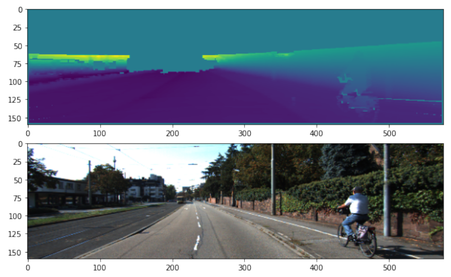
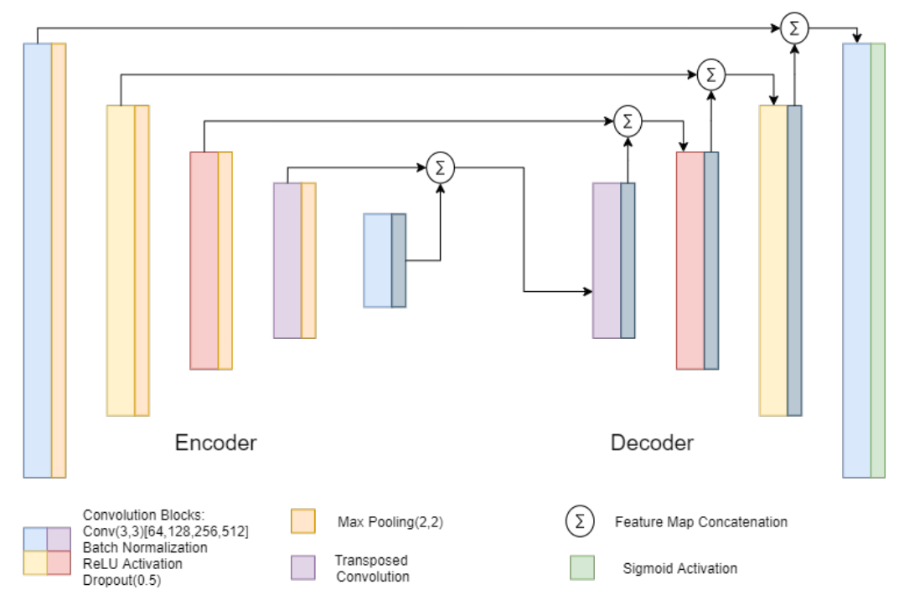
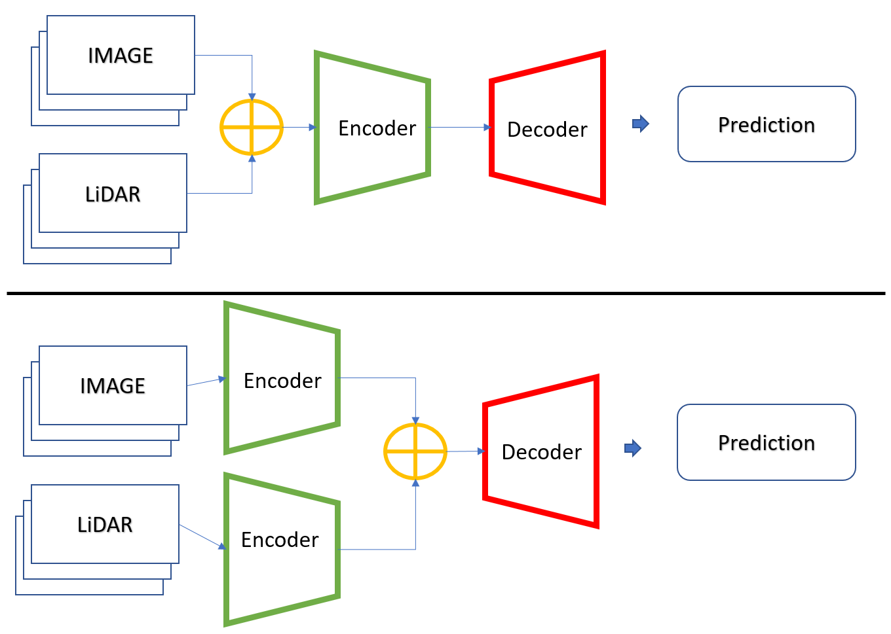
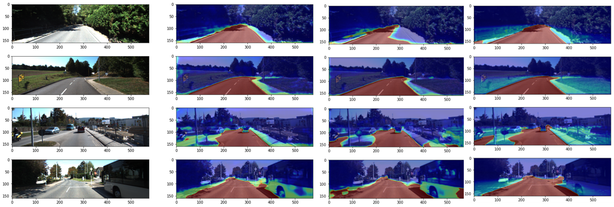

Camera and LiDAR fusion for semantic road segmentation using a modified SegNet encoder–decoder architecture evaluated on the KITTI road dataset.
Sooyong Kim · Tarun Joseph
The project investigated whether combining RGB camera information with LiDAR-derived depth information could improve semantic road segmentation compared with camera-only perception.
Camera-based semantic segmentation provides dense visual information, but its performance can be affected by illumination, image quality, and environmental conditions.
LiDAR provides complementary geometric and distance information that is less dependent on scene appearance. Combining these modalities therefore provides an opportunity to improve the robustness of road perception.
This project compared camera-only road segmentation with two multimodal architectures: early fusion and late fusion.
KITTI calibration parameters were used to transform Velodyne LiDAR points into the camera coordinate system and project them onto the RGB image plane.
The projected LiDAR points were converted into a sparse depth representation aligned with the RGB image and resized for network training and evaluation.

The segmentation model was developed from the SegNet encoder–decoder architecture and adapted for binary road segmentation.
The network incorporated convolutional blocks, batch normalization, ReLU activation, dropout, and transposed convolution for spatial reconstruction in the decoder.

Two architectures were implemented to investigate how the location of multimodal fusion affected segmentation performance.

RGB and LiDAR-derived depth information were concatenated before entering the encoder. The network therefore learned directly from a combined low-level multimodal representation.
RGB and LiDAR information were processed through independent encoder streams and combined near the end of the encoding stage before reconstruction in the decoder.
Late fusion produced the strongest overall result among the three sensor configurations evaluated.
| Configuration | MaxF | Accuracy | IoU | Training Time |
|---|---|---|---|---|
| RGB only | 0.9010 | 0.7828 | 0.4755 | 392 s |
| Early Fusion | 0.9153 | 0.7875 | 0.4665 | 392 s |
| Late Fusion | 0.9364 | 0.7958 | 0.4898 | 584 s |

Before evaluating multimodal fusion, the modified architecture was compared with the original SegNet using RGB images alone.
Early fusion improved MaxF relative to the camera-only configuration without increasing the reported training time.
Late fusion achieved the highest MaxF, accuracy, and IoU, but required two independent encoder streams. Training time therefore increased from 392 seconds to 584 seconds.
MaxF increased from 0.9010 with RGB-only input to 0.9364 with late LiDAR-camera fusion.
The experiments used the KITTI road dataset, which primarily represents favorable road, weather, and lighting conditions.
The results therefore do not establish performance across the full range of adverse conditions encountered in production autonomous-driving environments.
The original academic report is being revised into a polished final technical report while preserving the original experiments, quantitative results, technical content, figures, and references.
A revised technical report will provide the complete methodology, mathematical formulation, sensor calibration, network architecture, experimental results, discussion, and references.